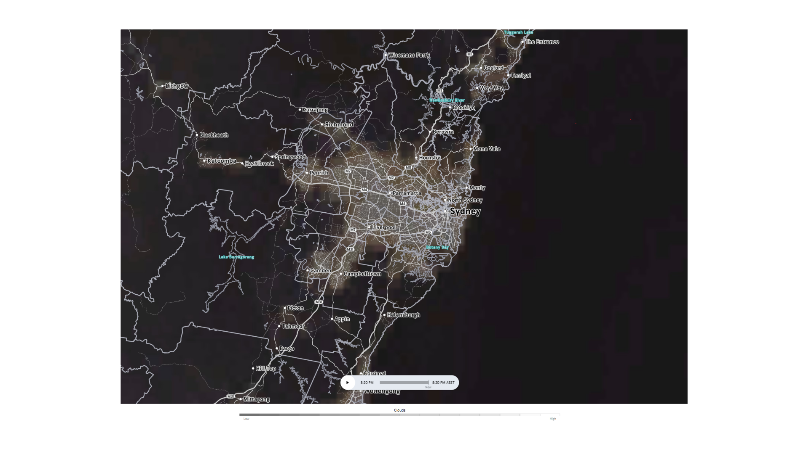

Weather condition is the most important aspect of stargazing because if the sky is covered in clouds, you can't even see the stars, let alone planets and galaxies. Cloud cover is used to explain the percentage and the types of clouds. AccuWeather is an informative website that I recommend using while stargazing to know the cloud cover of the specific location you desire beforehand. AccuWeather tells you the weather details, wind speed, and, most importantly, Cloud cover. It tells you either the sky is going to be clear, clearing, mainly cloudy, or much more. For the best results, Stargazing when there are little or no clouds is the best because it provides more detail of the sky.
Planets are very similar to stars, but galaxies aren't. Whenever you see a large system that includes stars, dust, dark matter, and planets all together, it is called a galaxy. Galaxies can vary in size and shape. The Milky Way galaxy is one of the most well-known.
